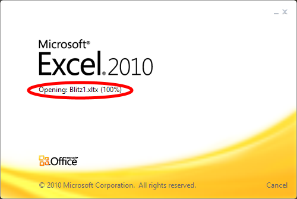

Установка и удаление программы
Минимальные требования: Windows XP SP3 и выше, Microsoft Office 2007 и выше.
- Скачать программу установки setup.exe и запустить. (Вариант – скачать архив setup.zip, распаковать и запустить программу установки).
-
Система выдаст предупреждение о попытке запуска программы, полученной из неизвестного источника:
Windows XP Windows 8, 8.1, 10 
Нажать кнопку Выполнить.
Нажать Подробнее...
...и кнопку Выполнить в любом случае. -
Появится еще одно предупреждение о том, что программа запрашивает разрешение на внесение изменений, на которое
нужно ответить согласием:
-
Возможно (особенно на старых системах), программа установки предложит сначала установить недостающие системные
компоненты. Нажать кнопку Установить:
При этом, возможно, потребуется перезагрузка системы:
После перезагрузки программа установки автоматически продолжит свою работу:
-
Далее запустится установка собственно программы, и после некоторых подготовительных действий:
покажет первый шаг установки:
-
Нажать кнопку Далее и затем, на следующем шаге, кнопку Установить:
-
Дождаться завершения процесса и на последнем шаге нажать кнопку Готово:
-
Появится окно системной консоли, и, если все прошло без ошибок, сообщение на его фоне:
-
Результатом программы установки яявляется создание ярлыка на рабочем столе, с помощью которого запускается
Microsoft Excel и создается новый документ на основе установленного шаблона.
 -
При необходимости переустановка и удаление производятся как обычно, из Панели управления: Меню Пуск –>
Панель управления –> Программы и компоненты (Установка и удаление программ):

Внимание! Чтобы документ после сохранения и закрытия открылся нормально, нужно изменить настройки Excel. Для этого нужно:
| Office 2007 | Office 2010 |
|
выбрать главное меню и нажать кнопку Параметры Excel: |
выбрать меню Файл и пункт Параметры: |
После этого в открывшемся окне настроек выбрать пункт Центр управления безопасностью и нажать кнопку Параметры
центра управления безопасностью...:

Откроется еще одно окно, в котором нужно выбрать пункт Параметры макросов и в разделе Параметры макросов
для разработчиков отметить пункт Доверять доступ к объектной модели пректов VBA:
Нажать OK в этом окне, нажать OK в предыдущем окне.
Без этого программный код не сможет получить доступ к рабочей книге Excel, а при открытии ранее сохраненного документа возможно получение ошибки вида:
Microsoft.VisualStudio.Tools.Applications.Runtime.ControlNotFoundException: Этот документ может работать не так,
как ожидается, поскольку отсутствует указанный ниже элемент управления: Sheet1. Данные, использующие этот элемент
управления, не будут автоматически отображены или обновлены, а дополнительные функциональные возможности будут
недоступны. За помощью обратитесь к администратору или к автору данного документа.
---> System.Runtime.InteropServices.COMException: Не удалось включить программный доступ к системе проектов
Microsoft Office Visual Basic для приложений. Если запущено приложение Microsoft Office Word или Microsoft Office
Excel, это может быть причиной запрета на включение программного доступа. Выйдите из приложения Word или Excel
перед тем, как открыть или создать проект.
Работа с программой
-
После запуска Microsoft Excel с помощью ярлыка шаблона "Турниры" на рабочем столе
появляется новый документ и поверх него окно настроек:
- Запустить WhatsApp в браузере или установленное заранее приложение WhatsApp для Windows (инструкция).
-
Выбрать режим:
Режим «Круговой турнир» предназначен для учета турниров с группами, когда каждый участник играет с остальными из той же группы. Частный случай – блиц-турнир из одной группы. Для учета турнира с несколькими группами нужно создать по одному отдельному файлу для каждой группы.
Режим «Команда на команду» предназначен для учета турниров между двумя командами, когда каждый участник играет со всеми участниками противоположной команды. Для многокомандного турнира нужно создать по одному отдельному файлу для каждой пары команд, которые играют между собой.
Режим «Один на один» предназначен для учета турниров между двумя командами, когда каждый участник играет с одним участником противоположной команды, имеющим тот же номер (первый с первым, второй со вторым и т.д.). Количество участников в обеих командах должно быть одинаково. В этом режиме дополнительно можно указать количество раундов для каждой пары. Для многокомандного турнира нужно создать по одному отдельному файлу для каждой пары команд, которые играют между собой.
Круговой турнир
-
Скопировать из WhatsApp список участников:
И вставить его в поле Список:
Если список подготовлен в каком-либо другом месте (например, в текстовом редакторе), то его можно скопировать и оттуда. Также можно добавлять участников вручную по одному (контекстное меню -> Добавить Ctrl+N). Список поддерживает все основные операции (добавление, удаление, переименование, изменение порядка путем перетаскивания элемента, а также операции копирования/вставки) как через контекстное меню, так и с помощью стандартных горячих клавиш. -
После окончательного формирования списка участников убедиться, что выставлены правильные значения количества
очков за победу и за ничью, и нажать кнопку Заполнить:
- Автоматически создаются и заполняются турнирная и итоговая таблицы, окно настроек закрывается.
-
Результаты игр заносятся в таблицу обычным способом, итоги и статистика считаются автоматически.
-
После завершения турнира перейти на закладку Места, проверить правильность подсчета очков
и мест и нажать кнопку Копировать:
-
Появится сообщение:
-
Перейти в WhatsApp и скопировать текст из буфера обмена:
Команда на команду
-
При выборе этого режима открываются поля для ввода названий команд и окно для ввода списка участников второй
команды:
- Заполнение обоих списков производится как указано выше для режима «Круговой турнир». С помощью перетаскивания мышью, а также операций копирования-вставки можно перемещать участников из одной команды в другую.
- После подготовки списков, ввода названий команд и проверки настройки очков за победу и за ничью нажать кнопку Заполнить.
- Автоматически создаются и заполняются турнирная и итоговая таблицы, окно настроек закрывается.
-
Результаты игр заносятся в таблицу обычным способом, итоги и статистика считаются автоматически.
-
После завершения турнира перейти на закладку «Места» и проверить правильность подсчета очков
и мест. В режиме «Команда на команду» обычно интерес представляют не индивидуальные показатели
участников, а общекомандные, приведенные под таблицами в графе Всего. Видно, что результаты команд
являются взаимно обратными:
Один на один
-
При выборе этого режима так же, как и в режиме «Команда на команду»,
открываются поля для ввода названий команд и окно для ввода списка участников второй команды:
- Заполнение обоих списков производится как указано выше для режима Круговой турнир. С помощью перетаскивания мышью, а также операций копирования-вставки можно перемещать участников из одной команды в другую.
- После подготовки списков, ввода названий команд, установки количества игр в каждой паре, проверки настройки очков за победу и за ничью нажать кнопку Заполнить.
- Автоматически создаются и заполняются турнирная и итоговая таблицы, окно настроек закрывается.
-
Результаты игр заносятся в таблицу обычным способом, итоги и статистика считаются автоматически.
- После завершения турнира перейти на закладку Места и проверить правильность подсчета очков и мест в командах. Результаты по каждой команде копируются и вставляются так же, как и в режиме «Круговой турнир».
-
Скопировать из WhatsApp список участников:
Окончательно: Поздравить победителей ,
всех остальных участников
и принять благодарности организаторам